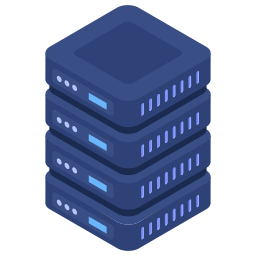

| PRODUTO |
DESCRIÇÃO |
VALOR |
UNIDADE |
 |
As máquinas virtuais (VM) fornecem capacidade de computação segura e elástica na nuvem para cargas de trabalho que variam desde pequenos projetos de desenvolvimento a aplicações globais de grande escala, como plataformas de comunicação em tempo real. As formas flexíveis permitem que os usuários otimizem recursos de VM com níveis personalizados de processador e memória para obter o melhor custo-benefício. |
R$0,50 |
Gigabyte por hora |
|  |
Os servidores bare metal da WebCloud Infrastructure (WCI) fornecem aos clientes isolamento, visibilidade e controle usando instâncias de computação dedicadas. Os servidores dão suporte a aplicativos que exigem altas contagens de núcleos, grandes quantidades de memória e alta largura de banda, escalonando até 160 núcleos (o maior do setor), 2 TB de RAM e até 1 PB de armazenamento em bloco. Os clientes podem criar ambientes de nuvem nos servidores bare metal da WebCloud com melhorias significativas de desempenho em relação a outras nuvens públicas e data centers on-premises. |
R$12.366,65 |
1 instância x 744 horas/mês |
 |
O WebCloud Infrastructure (WCI) Functions é uma plataforma sem servidor que permite aos desenvolvedores criar, executar e dimensionar aplicações sem gerenciar infraestruturas. O Functions se integra a aplicativos WebCloud Infrastructure, Platform Services e SaaS. Como o Functions se baseia no Projeto Fn de código-fonte aberto, os desenvolvedores podem criar aplicativos que possam ser facilmente portados para outros ambientes em nuvem e locais. O código baseado no Functions normalmente é executado por curtos períodos, e os clientes só pagam pelos recursos que usam. |
R$0,01 |
Segundos de memória em gigabytes |
| |
WebCloud Container Engine for Kubernetes é um serviço de orquestração de contêineres gerenciado pela WebCloud que pode reduzir o tempo e os custos para criar aplicações nativas da nuvem modernas. Diferentemente da maioria dos outros fornecedores, a WebCloud Infrastructure oferece Container Engine for Kubernetes como um serviço gratuito executado em formas de computação de desempenho mais alto e custo mais baixo. Os engenheiros DevOps podem usar o Kubernetes de código-fonte aberto não modificado na portabilidade da carga de trabalho do aplicativo e para simplificar as operações com atualizações automáticas e patches. |
R$120,50 |
A cada Container |
| |
O bare metal e as instâncias virtuais com GPU oferecem às empresas uma plataforma de processamento de alto desempenho para aplicativos exigentes que executam algoritmos sofisticados. Os aplicativos que utilizam machine learning, processamento de imagens e tarefas de processamento de alto desempenho paralelas podem aproveitar a execução de GPUs, pois eles permitem que as empresas solucionem problemas complexos e inovem mais rápido. |
R$16,30 |
GPU/h |
 |
A computação de alto desempenho (HPC) na WebCloud Infrastructure (WCI) oferece recursos de computação avançados e econômicos para resolver problemas matemáticos e científicos complexos em todos os setores. Os servidores de bare metal da WCI, juntamente à rede de cluster da WebCloud, fornecem acesso a RDMA de latência ultrabaixa (latência de < 2 μs em clusters de dezenas de milhares de núcleos) por Ethernet convergente (RoCE) v2. |
R$30,62 |
Por hora |